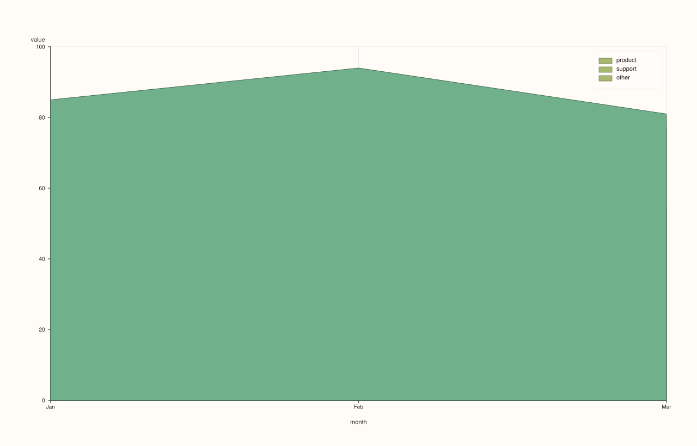
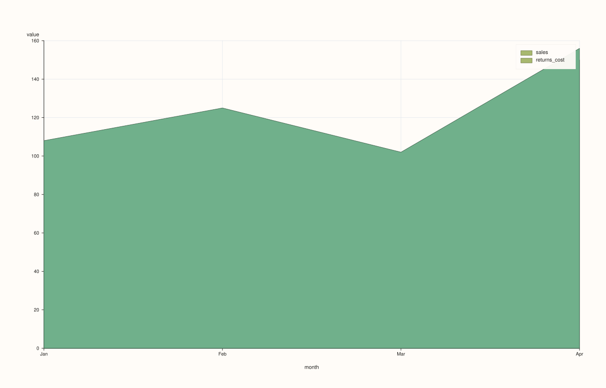

DataFramePlotAccessor::area_stacked¶
Back to DataFramePlotAccessor API Reference
Signatures¶
DataFramePlotAccessor::area_stacked(pluss::msharp::RangeView::Of<std::string_view> y_features,
std::optional<std::string_view> x_feature = std::nullopt) const -> pluss::pl::Studio
DataFramePlotAccessor::area_stacked(pluss::msharp::RangeView::Of<std::string_view> y_features,
std::optional<std::string_view> x_feature,
const AreaStackedPlotOptions& options) const -> pluss::pl::Studio
DataFramePlotAccessor::area_stacked(std::initializer_list<std::string_view> y_features,
std::optional<std::string_view> x_feature = std::nullopt) const -> pluss::pl::Studio
DataFramePlotAccessor::area_stacked(std::initializer_list<std::string_view> y_features,
std::optional<std::string_view> x_feature,
const AreaStackedPlotOptions& options) const -> pluss::pl::Studio
What It Does¶
Draws several numeric y-features as a stacked area chart: each feature’s values
accumulate on top of the running total of the features drawn before it, so the topmost
edge of the last trace represents the sum of every requested feature at that x position.
This is the composition view — “how much does each part contribute to the whole, at each
point” — as opposed to area(), which draws independently overlapping
(non-accumulating) filled regions. Unlike every other line/area method on this accessor,
there is no single-feature overload: area_stacked() only accepts a RangeView or
initializer_list of y-features, since stacking a single feature on its own is a
degenerate case.
See line() for the shared x-axis-resolution rules (explicit argument, then
options.default_x_feature, then the frame’s row labels titled "case") and the
Studio-return / no-cout mechanics common to this whole accessor.
Note
Each layer’s fill actually reaches down to zero, not to the layer below it
Internally, each successive layer’s cumulative top is computed correctly (feature 2’s
“top” is feature 1’s top plus feature 2’s own height, and so on) — the stacking math itself
is exact. But each layer is filled from its own cumulative top down to a flat baseline of
0, not down to the previous layer’s top. The correct stacked shape still comes through,
because each later (taller) layer is drawn on top of the earlier ones in the same pane and
visually covers the redundant region beneath it — but with the default semi-transparent
alpha (0.7), the color in an area where multiple layers overlap is a blend of every
layer drawn there, not a single flat color unique to one band. If a fully solid per-band
look matters, raise alpha toward 1.0 in AreaStackedPlotOptions so each later layer’s
fill more fully occludes the ones beneath it.
Parameters¶
y_features (RangeView<std::string_view> or std::initializer_list<std::string_view>)
Numeric features to stack, in the order they’re accumulated — the first feature forms
the bottom band, the last feature’s cumulative top is the total across all of them. At
least one is required — an empty list throws "DataFrame::plot().area_stacked: at least one y feature is required".
x_feature (std::optional<std::string_view>, default std::nullopt)
Same three-step resolution as line().
options (AreaStackedPlotOptions)
cpp struct AreaStackedPlotOptions { double alpha{0.7}; double line_width{1.2}; };
alpha defaults lower than both line() (1.0) and area()
(0.88) — see the note above for why: with several stacked, overlapping fills, a lower
default opacity keeps the underlying grid and boundary lines visible through the stack.
Returns¶
pluss::pl::Studio
A figure with one pane containing one filled area trace per requested y-feature, each
one’s top edge representing the running cumulative total up to and including that
feature.
Examples¶
Example 1. A two-feature stack with an explicit x-axis — total’s implied height at any
point is sales + returns_cost combined.
using namespace pluss::table;
auto breakdown = DataFrame({
{"month", Slate(pluss::make_note({"Jan", "Feb", "Mar", "Apr"}))},
{"sales", Slate(pluss::make_series({100.0, 120.0, 90.0, 150.0}))},
{"returns_cost", Slate(pluss::make_series({8.0, 5.0, 12.0, 6.0}))},
});
auto chart = breakdown.plot().area_stacked({"sales", "returns_cost"}, "month");
chart.show();
sales forms the bottom band (0 up to its own value at each month); returns_cost is
drawn stacked on top of it, its own cumulative top reaching sales + returns_cost at each
month.

Example 2. Three features stacked, via a reusable RangeView built at runtime.
auto breakdown3 = DataFrame({
{"month", Slate(pluss::make_note({"Jan", "Feb", "Mar"}))},
{"product", Slate(pluss::make_series({60.0, 70.0, 55.0}))},
{"support", Slate(pluss::make_series({20.0, 18.0, 22.0}))},
{"other", Slate(pluss::make_series({5.0, 6.0, 4.0}))},
});
std::vector<std::string_view> parts{"product", "support", "other"};
auto chart = breakdown3.plot().area_stacked(
pluss::msharp::RangeView::Of<std::string_view>(parts), "month");
chart.show();
The topmost trace’s edge (other’s cumulative top) traces product + support + other at
each month — the total, decomposed into three accumulating bands beneath it.

Example 3. No x_feature: falls back to the frame’s own row labels, exactly like every
other chart method on this accessor — see line()’s Example 3.
auto chart = breakdown.plot().area_stacked({"sales", "returns_cost"});
Example 4. An explicit AreaStackedPlotOptions, raising opacity for a more solid-looking
stack (accepting more blending obscurity for earlier layers, per the note above).
AreaStackedPlotOptions stacked_options;
stacked_options.alpha = 0.95;
stacked_options.line_width = 1.5;
auto chart = breakdown.plot().area_stacked({"sales", "returns_cost"}, "month", stacked_options);
chart.show();

Example 5. The initializer_list overload with an explicit options object.
auto chart = breakdown.plot().area_stacked({"sales", "returns_cost"}, "month", stacked_options);

Notes¶
No single-feature overload exists — only
RangeView/initializer_listforms.At least one y-feature is required.
Each layer’s fill reaches down to a flat
0baseline, not the previous layer’s top — see the note above for the practical implication on overlapping-fill color.Returns a
pluss::pl::Studio— seeline()’s important callout for how to view or save the result.
See Also¶
DataFramePlotAccessor::area: the non-stacking, overlapping-fill sibling.DataFramePlotAccessor::bar_stacked: the same accumulating idea, drawn as discrete bars instead of continuous filled regions.DataFramePlotAccessor::line: the canonical explanation of this accessor’s shared x-axis andStudio-return mechanics.